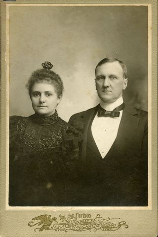
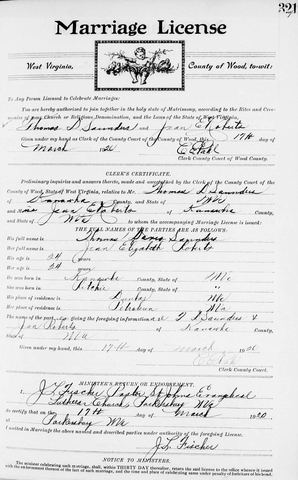

Thomas "Davis" Saunders
1896–1982
Life Story
!MILITARY: US Army #1835926, Wagoneer, Battery A, 315th Field Art.; discharged. 10 June 1919 for medical reasons - slightly wounded by shell splinters at Montfaucon Oct. 6, 1918.
AKA: Uncle Davis. Lived in Dunbar, West Virginia until 1966
Life events
| Born | 21 May 1896 · London, West Virginia Map |
|---|---|
| Lived | 1900 · Cabin Creek, West Virginia Map |
| Married | 17 Mar 1920 · Parkersburg, West Virginia Map |
| Lived | 1930 · Dunbar, West Virginia Map |
| Lived | 1935 · Dunbar, West Virginia Map  |
| Lived | 1940 · Dunbar, West Virginia Map |
| Died | 24 Apr 1982 · Mauldin, South Carolina Map |
Family
Parents
Robert George Saunders1860–1946

Annette Campbell 'Nettie' Straughan1869–1927
Thomas "Davis" Saunders1896–1982
Unknown spouse
Photos

Walter Mann Saunders
Thomas "Davis" Saunders
George Douglas Saunders
Mary "Welby" Saunders
Robert "Withers" Saunders
Elizabeth "Betty" McCutcheon Saunders
+2 more

Thomas "Davis" Saunders

Thomas "Davis" Saunders
Thomas "Davis" Saunders
Robert "Withers" Saunders
Robert George Saunders